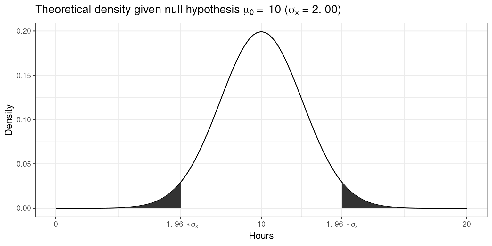

4 Hypothesis testing
This chapter is primarily based on Field, A., Miles J., & Field, Z. (2012): Discovering Statistics Using R. Sage Publications, chapter 5.
You can download the corresponding R-Code here
4.1 Introduction
We test hypotheses because we are confined to taking samples – we rarely work with the entire population. In the previous chapter, we introduced the standard error (i.e., the standard deviation of a large number of hypothetical samples) as an estimate of how well a particular sample represents the population. We also saw how we can construct confidence intervals around the sample mean \(\bar x\) by computing \(SE_{\bar x}\) as an estimate of \(\sigma_{\bar x}\) using \(s\) as an estimate of \(\sigma\) and calculating the 95% CI as \(\bar x \pm 1.96 * SE_{\bar x}\). Although we do not know the true population mean (\(\mu\)), we might have an hypothesis about it and this would tell us how the corresponding sampling distribution looks like. Based on the sampling distribution of the hypothesized population mean, we could then determine the probability of a given sample assuming that the hypothesis is true.
Let us again begin by assuming we know the entire population using the example of music listening times among students from the previous example. As a reminder, the following plot shows the distribution of music listening times in the population of WU students.
library(tidyverse)
library(ggplot2)
library(latex2exp)
set.seed(321)
hours <- rgamma(25000, shape = 2, scale = 10)
ggplot(data.frame(hours)) + geom_histogram(aes(x = hours),
bins = 30, fill = "white", color = "black") + geom_vline(xintercept = mean(hours),
size = 1) + theme_bw() + labs(title = "Histogram of listening times",
subtitle = TeX(sprintf("Population mean ($\\mu$) = %.2f; population standard deviation ($\\sigma$) = %.2f",
round(mean(hours), 2), round(sd(hours), 2))),
y = "Number of students", x = "Hours")In this example, the population mean (\(\mu\)) is equal to 19.98, and the population standard deviation \(\sigma\) is equal to 14.15.
4.1.1 The null hypothesis
Let us assume that we were planning to take a random sample of 50 students from this population and our hypothesis was that the mean listening time is equal to some specific value \(\mu_0\), say \(10\). This would be our null hypothesis. The null hypothesis refers to the statement that is being tested and is usually a statement of the status quo, one of no difference or no effect. In our example, the null hypothesis would state that there is no difference between the true population mean \(\mu\) and the hypothesized value \(\mu_0\) (in our example \(10\)), which can be expressed as follows:
\[ H_0: \mu = \mu_0 \] When conducting research, we are usually interested in providing evidence against the null hypothesis. If we then observe sufficient evidence against it, our estimate is said to be significant. If the null hypothesis is rejected, this is taken as support for the alternative hypothesis. The alternative hypothesis assumes that some difference exists, which can be expressed as follows:
\[ H_1: \mu \neq \mu_0 \] Accepting the alternative hypothesis in turn will often lead to changes in opinions or actions. Note that while the null hypothesis may be rejected, it can never be accepted based on a single test. If we fail to reject the null hypothesis, it means that we simply haven’t collected enough evidence against the null hypothesis to disprove it. In classical hypothesis testing, there is no way to determine whether the null hypothesis is true. Hypothesis testing provides a means to quantify to what extent the data from our sample is in line with the null hypothesis.
In order to quantify the concept of “sufficient evidence” we look at the theoretical distribution of the sample means given our null hypothesis and the sample standard error. Using the available information we can infer the sampling distribution for our null hypothesis. Recall that the standard deviation of the sampling distribution (i.e., the standard error of the mean) is given by \(\sigma_{\bar x}={\sigma \over \sqrt{n}}\), and thus can be computed as follows:
mean_pop <- mean(hours)
sigma <- sd(hours) #population standard deviation
n <- 50 #sample size
standard_error <- sigma/sqrt(n) #standard error
standard_error## [1] 2.001639Since we know from the central limit theorem that the sampling distribution is normal for large enough samples, we can now visualize the expected sampling distribution if our null hypothesis was in fact true (i.e., if the was no difference between the true population mean and the hypothesized mean of 10).

We also know that 95% of the probability is within 1.96 standard deviations from the mean. Values higher than that are rather unlikely, if our hypothesis about the population mean was indeed true. This is shown by the shaded area, also known as the “rejection region”. To test our hypothesis that the population mean is equal to \(10\), let us take a random sample from the population.
set.seed(12567)
H_0 <- 10
student_sample <- sample(1:25000, size = 50, replace = FALSE)
student_sample <- hours[student_sample]
mean_sample <- mean(student_sample)
ggplot(data.frame(student_sample)) + geom_histogram(aes(x = student_sample),
fill = "white", color = "black", bins = 20) + theme_bw() +
geom_vline(xintercept = mean(student_sample), color = "black",
size = 1) + labs(title = TeX(sprintf("Distribution of values in the sample ($n =$ %.0f, $\\bar{x] = $ %.2f, s = %.2f)",
n, mean(student_sample), sd(student_sample))),
x = "Hours", y = "Frequency")The mean listening time in the sample (black line) \(\bar x\) is 18.59. We can already see from the graphic above that such a value is rather unlikely under the hypothesis that the population mean is \(10\). Intuitively, such a result would therefore provide evidence against our null hypothesis. But how could we quantify specifically how unlikely it is to obtain such a value and decide whether or not to reject the null hypothesis? Significance tests can be used to provide answers to these questions.
4.1.2 Statistical inference on a sample
4.1.2.1 Test statistic
4.1.2.1.1 z-scores
Let’s go back to the sampling distribution above. We know that 95% of all values will fall within 1.96 standard deviations from the mean. So if we could express the distance between our sample mean and the null hypothesis in terms of standard deviations, we could make statements about the probability of getting a sample mean of the observed magnitude (or more extreme values). Essentially, we would like to know how many standard deviations (\(\sigma_{\bar x}\)) our sample mean (\(\bar x\)) is away from the population mean if the null hypothesis was true (\(\mu_0\)). This can be formally expressed as follows:
\[ \bar x- \mu_0 = z \sigma_{\bar x} \]
In this equation, z will tell us how many standard deviations the sample mean \(\bar x\) is away from the null hypothesis \(\mu_0\). Solving for z gives us:
\[ z = {\bar x- \mu_0 \over \sigma_{\bar x}}={\bar x- \mu_0 \over \sigma / \sqrt{n}} \]
This standardized value (or “z-score”) is also referred to as a test statistic. Let’s compute the test statistic for our example above:
## [1] 4.292454To make a decision on whether the difference can be deemed statistically significant, we now need to compare this calculated test statistic to a meaningful threshold. In order to do so, we need to decide on a significance level \(\alpha\), which expresses the probability of finding an effect that does not actually exist (i.e., Type I Error). You can find a detailed discussion of this point at the end of this chapter. For now, we will adopt the widely accepted significance level of 5% and set \(\alpha\) to 0.05. The critical value for the normal distribution and \(\alpha\) = 0.05 can be computed using the qnorm() function as follows:
## [1] 1.959964We use 0.975 and not 0.95 since we are running a two-sided test and need to account for the rejection region at the other end of the distribution. Recall that for the normal distribution, 95% of the total probability falls within 1.96 standard deviations of the mean, so that higher (absolute) values provide evidence against the null hypothesis. Generally, we speak of a statistically significant effect if the (absolute) calculated test statistic is larger than the (absolute) critical value. We can easily check if this is the case in our example:
## [1] TRUESince the absolute value of the calculated test statistic is larger than the critical value, we would reject \(H_0\) and conclude that the true population mean \(\mu\) is significantly different from the hypothesized value \(\mu_0 = 10\).
4.1.2.1.2 t-statistic
You may have noticed that the formula for the z-score above assumes that we know the true population standard deviation (\(\sigma\)) when computing the standard deviation of the sampling distribution (\(\sigma_{\bar x}\)) in the denominator. However, the population standard deviation is usually not known in the real world and therefore represents another unknown population parameter which we have to estimate from the sample. We saw in the previous chapter that we usually use \(s\) as an estimate of \(\sigma\) and \(SE_{\bar x}\) as and estimate of \(\sigma_{\bar x}\). Intuitively, we should be more conservative regarding the critical value that we used above to assess whether we have a significant effect to reflect this uncertainty about the true population standard deviation. That is, the threshold for a “significant” effect should be higher to safeguard against falsely claiming a significant effect when there is none. If we replace \(\sigma_{\bar x}\) by it’s estimate \(SE_{\bar x}\) in the formula for the z-score, we get a new test statistic (i.e, the t-statistic) with its own distribution (the t-distribution):
\[ t = {\bar x- \mu_0 \over SE_{\bar x}}={\bar x- \mu_0 \over s / \sqrt{n}} \]
Here, \(\bar X\) denotes the sample mean and \(s\) the sample standard deviation. The t-distribution has more probability in its “tails”, i.e. farther away from the mean. This reflects the higher uncertainty introduced by replacing the population standard deviation by its sample estimate. Intuitively, this is particularly relevant for small samples, since the uncertainty about the true population parameters decreases with increasing sample size. This is reflected by the fact that the exact shape of the t-distribution depends on the degrees of freedom, which is the sample size minus one (i.e., \(n-1\)). To see this, the following graph shows the t-distribution with different degrees of freedom for a two-tailed test and \(\alpha = 0.05\). The grey curve shows the normal distribution.
Notice that as \(n\) gets larger, the t-distribution gets closer and closer to the normal distribution, reflecting the fact that the uncertainty introduced by \(s\) is reduced. To summarize, we now have an estimate for the standard deviation of the distribution of the sample mean (i.e., \(SE_{\bar x}\)) and an appropriate distribution that takes into account the necessary uncertainty (i.e., the t-distribution). Let us now compute the t-statistic according to the formula above:
## [1] 4.84204Notice that the value of the t-statistic is higher compared to the z-score (4.29). This can be attributed to the fact that by using the \(s\) as and estimate of \(\sigma\), we underestimate the true population standard deviation. Hence, the critical value would need to be larger to adjust for this. This is what the t-distribution does. Let us compute the critical value from the t-distribution with n - 1degrees of freedom.
## [1] 2.009575Again, we use 0.975 and not 0.95 since we are running a two-sided test and need to account for the rejection region at the other end of the distribution. Notice that the new critical value based on the t-distributionis larger, to reflect the uncertainty when estimating \(\sigma\) from \(s\). Now we can see that the calculated test statistic is still larger than the critical value.
## [1] TRUEThe following graphics shows that the calculated test statistic (red line) falls into the rejection region so that in our example, we would reject the null hypothesis that the true population mean is equal to \(10\).
Decision: Reject \(H_0\), given that the calculated test statistic is larger than critical value.
Something to keep in mind here is the fact the test statistic is a function of the sample size. This, as \(n\) gets large, the test statistic gets larger as well and we are more likely to find a significant effect. This reflects the decrease in uncertainty about the true population mean as our sample size increases.
4.1.2.2 P-values
In the previous section, we computed the test statistic, which tells us how close our sample is to the null hypothesis. The p-value corresponds to the probability that the test statistic would take a value as extreme or more extreme than the one that we actually observed, assuming that the null hypothesis is true. It is important to note that this is a conditional probability: we compute the probability of observing a sample mean (or a more extreme value) conditional on the assumption that the null hypothesis is true. The pnorm()function can be used to compute this probability. It is the cumulative probability distribution function of the `normal distribution. Cumulative probability means that the function returns the probability that the test statistic will take a value less than or equal to the calculated test statistic given the degrees of freedom. However, we are interested in obtaining the probability of observing a test statistic larger than or equal to the calculated test statistic under the null hypothesis (i.e., the p-value). Thus, we need to subtract the cumulative probability from 1. In addition, since we are running a two-sided test, we need to multiply the probability by 2 to account for the rejection region at the other side of the distribution.
## [1] 0.00001326885This value corresponds to the probability of observing a mean equal to or larger than the one we obtained from our sample, if the null hypothesis was true. As you can see, this probability is very low. A small p-value signals that it is unlikely to observe the calculated test statistic under the null hypothesis. To decide whether or not to reject the null hypothesis, we would now compare this value to the level of significance (\(\alpha\)) that we chose for our test. For this example, we adopt the widely accepted significance level of 5%, so any test results with a p-value < 0.05 would be deemed statistically significant. Note that the p-value is directly related to the value of the test statistic. The relationship is such that the higher (lower) the value of the test statistic, the lower (higher) the p-value.
Decision: Reject \(H_0\), given that the p-value is smaller than 0.05.
4.1.2.3 Confidence interval
For a given statistic calculated for a sample of observations (e.g., listening times), a 95% confidence interval can be constructed such that in 95% of samples, the true value of the true population mean will fall within its limits. If the parameter value specified in the null hypothesis (here \(10\)) does not lie within the bounds, we reject \(H_0\). Building on what we learned about confidence intervals in the previous chapter, the 95% confidence interval based on the t-distribution can be computed as follows:
\[ CI_{lower} = {\bar x} - t_{1-{\alpha \over 2}} * SE_{\bar x} \\ CI_{upper} = {\bar x} + t_{1-{\alpha \over 2}} * SE_{\bar x} \]
It is easy to compute this interval manually:
ci_lower <- (mean_sample) - qt(0.975, df = df) * SE
ci_upper <- (mean_sample) + qt(0.975, df = df) * SE
ci_lower## [1] 15.02606## [1] 22.15783The interpretation of this interval is as follows: if we would (hypothetically) take 100 samples and calculated the mean and confidence interval for each of them, then the true population mean would be included in 95% of these intervals. The CI is informative when reporting the result of your test, since it provides an estimate of the uncertainty associated with the test result. From the test statistic or the p-value alone, it is not easy to judge in which range the true population parameter is located. The CI provides an estimate of this range.
Decision: Reject \(H_0\), given that the parameter value from the null hypothesis (\(10\)) is not included in the interval.
To summarize, you can see that we arrive at the same conclusion (i.e., reject \(H_0\)), irrespective if we use the test statistic, the p-value, or the confidence interval. However, keep in mind that rejecting the null hypothesis does not prove the alternative hypothesis (we can merely provide support for it). Rather, think of the p-value as the chance of obtaining the data we’ve collected assuming that the null hypothesis is true. You should report the confidence interval to provide an estimate of the uncertainty associated with your test results.
4.1.3 Choosing the right test
The test statistic, as we have seen, measures how close the sample is to the null hypothesis and often follows a well-known distribution (e.g., normal, t, or chi-square). To select the correct test, various factors need to be taken into consideration. Some examples are:
- On what scale are your variables measured (categorical vs. continuous)?
- Do you want to test for relationships or differences?
- If you test for differences, how many groups would you like to test?
- For parametric tests, are the assumptions fulfilled?
The previous discussion used a one sample t-test as an example, which requires that variable is measured on an interval or ratio scale. If you are confronted with other settings, the following flow chart provides a rough guideline on selecting the correct test:

Flowchart for selecting an appropriate test (source: McElreath, R. (2016): Statistical Rethinking, p. 2)
For a detailed overview over the different type of tests, please also refer to this overview by the UCLA.
4.1.3.1 Parametric vs. non-parametric tests
A basic distinction can be made between parametric and non-parametric tests. Parametric tests require that variables are measured on an interval or ratio scale and that the sampling distribution follows a known distribution. Non-Parametric tests on the other hand do not require the sampling distribution to be normally distributed (a.k.a. “assumption free tests”). These tests may be used when the variable of interest is measured on an ordinal scale or when the parametric assumptions do not hold. They often rely on ranking the data instead of analyzing the actual scores. By ranking the data, information on the magnitude of differences is lost. Thus, parametric tests are more powerful if the sampling distribution is normally distributed. In this chapter, we will first focus on parametric tests and cover non-parametric tests later.
4.1.3.2 One-tailed vs. two-tailed test
For some tests you may choose between a one-tailed test versus a two-tailed test. The choice depends on the hypothesis you specified, i.e., whether you specified a directional or a non-directional hypotheses. In the example above, we used a non-directional hypothesis. That is, we stated that the mean is different from the comparison value \(\mu_0\), but we did not state the direction of the effect. A directional hypothesis states the direction of the effect. For example, we might test whether the population mean is smaller than a comparison value:
\[ H_0: \mu \ge \mu_0 \\ H_1: \mu < \mu_0 \]
Similarly, we could test whether the population mean is larger than a comparison value:
\[ H_0: \mu \le \mu_0 \\ H_1: \mu > \mu_0 \]
Connected to the decision of how to phrase the hypotheses (directional vs. non-directional) is the choice of a one-tailed test versus a two-tailed test. Let’s first think about the meaning of a one-tailed test. Using a significance level of 0.05, a one-tailed test means that 5% of the total area under the probability distribution of our test statistic is located in one tail. Thus, under a one-tailed test, we test for the possibility of the relationship in one direction only, disregarding the possibility of a relationship in the other direction. In our example, a one-tailed test could test either if the mean listening time is significantly larger or smaller compared to the control condition, but not both. Depending on the direction, the mean listening time is significantly larger (smaller) if the test statistic is located in the top (bottom) 5% of its probability distribution.
The following graph shows the critical values that our test statistic would need to surpass so that the difference between the population mean and the comparison value would be deemed statistically significant.
It can be seen that under a one-sided test, the rejection region is at one end of the distribution or the other. In a two-sided test, the rejection region is split between the two tails. As a consequence, the critical value of the test statistic is smaller using a one-tailed test, meaning that it has more power to detect an effect. Having said that, in most applications, we would like to be able catch effects in both directions, simply because we can often not rule out that an effect might exist that is not in the hypothesized direction. For example, if we would conduct a one-tailed test for a mean larger than some specified value but the mean turns out to be substantially smaller, then testing a one-directional hypothesis ($H_0: _0 $) would not allow us to conclude that there is a significant effect because there is not rejection at this end of the distribution.
4.1.4 Summary
As we have seen, the process of hypothesis testing consists of various steps:
- Formulate null and alternative hypotheses
- Select an appropriate test
- Choose the level of significance (\(\alpha\))
- Descriptive statistics and data visualization
- Conduct significance test
- Report results and draw a marketing conclusion